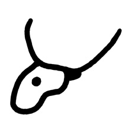
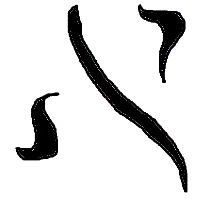

Алеф (א)
Алеф — первая буква еврейского алфавита. Наряду с буквой йод (י) не имеет полноценного твёрдого звучания, присущего остальным двадцати знакам. Обе эти буквы несут в себе идею Божественного вмешательства в этот мир. Но если йод подразумевает прямое воздействие божественной силы на материальный мир, то алеф — это совместное творчество Бога и человека и одновременно схема человеческого бытия.
Древняя пиктограмма

Древняя пиктограмма алеф изображает голову быка, что символизирует силу и могущество её обладателя. Рога также использовались в храме на жертвенниках. Выражение «наставила мужу рога» по сути означает изменение сознания масс относительно истинного значения — в реальности всё обстоит иначе: рогатый самец более плодороден. Также стоит отметить, что все кошерные животные, обладающие обоими признаками пригодности в пищу, имеют ещё и третий, негласный признак — рога.
Составные части буквы

В современном еврейском алфавите буква алеф состоит из трёх начертаний: символ йод — божественная сила, сходящая с неба; йод — божественная искра в человеке, поднимающаяся снизу; и обе они сходятся в букве вав.
Более наглядно алеф показана в книге Исход, когда Моисей общался с Яхве. Моисей поднялся на гору, ведомый руах (духом святым), где его ждал Творец, сошедший с небес. Это единственная истинная схема взаимодействия с Богом при участии всех трёх составляющих: Материи, Информации и Движения. С последствиями действий Моисея мы получили Тору — законодательство и правила жизни, познания Творца для построения идеального мира.
Грамматические свойства
Буква алеф имеет и физические свойства, формирующие словообразование и построение грамматических основ. Впервые алеф в начале слова встречается в первом стихе Торы: «Берешит бара Элохим» — где впервые упоминается Имя Бога как Творца всего, что мы видим вокруг нас.
Алеф и ламед символизируют схему и посох в руках Элохима, далее следует хей — откровение, или видение. Фиксируется всё связкой йод и мем как образование множественного числа и уважительной формы обращения, по типу «Вы» в русском языке.
Более подробный разбор этого слова — после описания всех букв алфавита.
Имя Бога и контекст
В двадцатой главе Исход написано: «Да не будет у тебя других Элохим перед лицом моим» — это говорит о том, что во многих случаях требуется связка имени для конкретики, например «Яхве Элохим». В начале Торы не требуется пояснения, ибо мы знаем, кто конкретно творил в данный момент, но в дальнейшем стоит с осторожностью подходить к переводу.